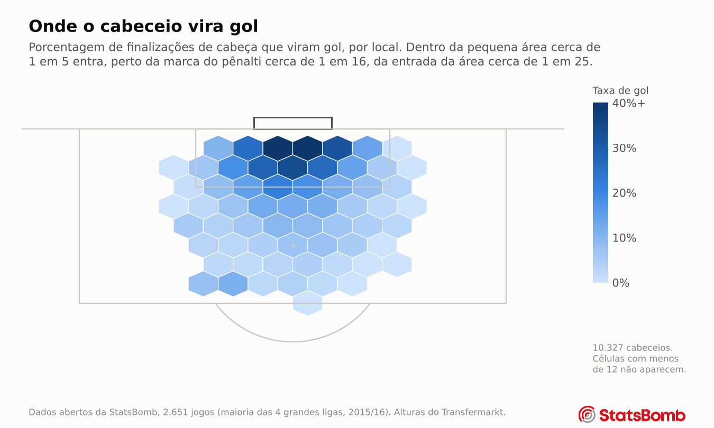
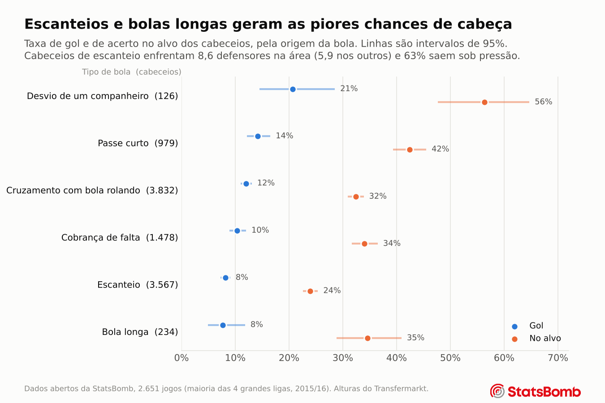
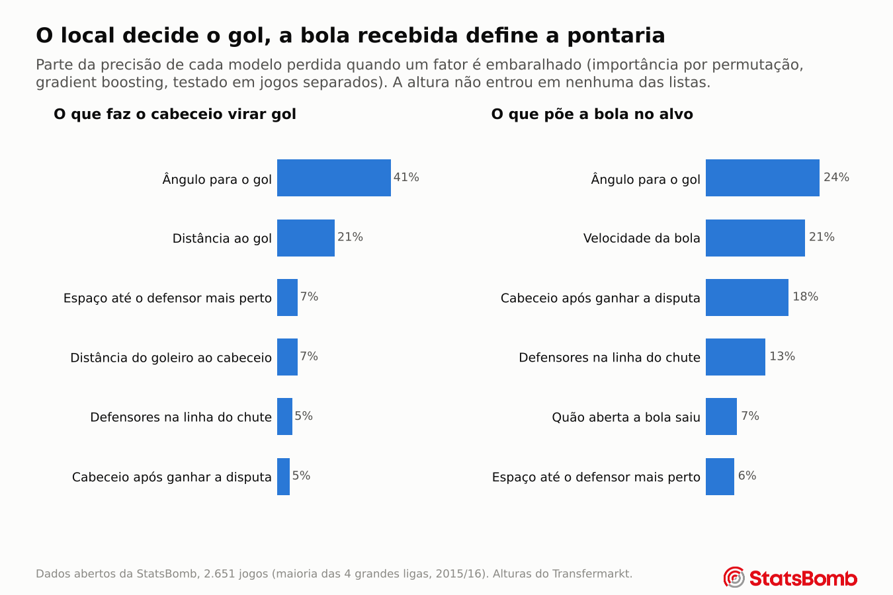
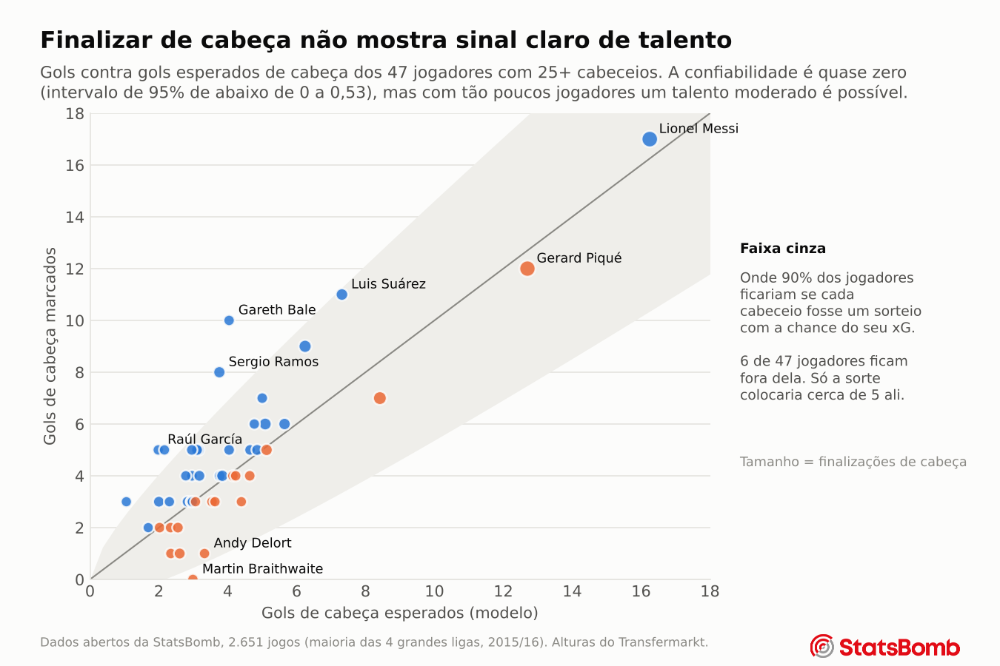

Capítulo 2
Cabeceios no ataque
O que transforma um cabeceio em gol, e alguém finaliza de cabeça melhor do que a situação prevê?
Gols esperados, em um exemplo
Das 2.129 finalizações de cabeça feitas dentro da pequena área, 21% foram gol. Das 2.182 feitas perto da marca do pênalti, só 6%. Essa taxa é a ideia por trás dos gols esperados (xG). Cada cabeceio recebe uma probabilidade com base em cabeceios parecidos, e os gols de um jogador menos o seu xG mostram se ele marcou mais do que as suas chances mereciam.
Um modelo de xG de verdade faz a mesma coisa com muitos detalhes ao mesmo tempo, como o ângulo, os defensores no caminho, onde está o goleiro e como a bola chegou.

Como a bola chega importa
Um desvio de um companheiro é a melhor chance de cabeça, com cerca de 1 em 5 entrando. Escanteios e bolas longas são as piores, com cerca de 1 em 12. Cabeceios de escanteio enfrentam em média 8,6 defensores na área, contra 5,9 nas outras bolas, e 63% deles saem sob pressão.

No que o modelo se apoia
Foram feitos dois modelos para cada pergunta, uma regressão logística, fácil de explicar, e um modelo de gradient boosting, que encontra padrões mais complexos. Para ver no que um modelo se apoia, uma informação por vez é embaralhada ao acaso e a queda de precisão é medida.

Ângulo e distância explicam cerca de 60% do que o modelo de gols sabe. Acertar o alvo depende mais da bola recebida, sobretudo da velocidade com que ela chega e de o cabeceio ter sido disputado ou não.
A altura não aparece em nenhuma das listas. Jogadores mais altos não marcam mais do que o seu xG diz, e colocar a altura no modelo não mudou a sua precisão. A altura ajuda o jogador a chegar na bola. Depois que ele chega, posição e espaço decidem o resto.
O quanto o modelo é bom
O modelo foi testado em jogos que ele nunca viu no treino. Ele coloca um gol ao acaso acima de uma finalização perdida ao acaso 74% das vezes (AUC 0,743, com intervalo de 95% de 0,728 a 0,758). O xG profissional da própria StatsBomb marca 0,749 nos mesmos cabeceios. A diferença de 0,006 está bem dentro do ruído, então os dois não podem ser diferenciados (teste pareado p = 0,20).
As probabilidades do modelo também são honestas. Quando ele dá a um grupo de cabeceios cerca de 10% de chance, 10,7% deles entram, e no total ele prevê 0,106 gol por cabeceio contra uma taxa real de 0,107. A página de Método traz a verificação completa da calibração.
Alguém finaliza de cabeça melhor do que o esperado?
Essa era uma das perguntas principais, e a resposta honesta é que os dados não conseguem dizer. Só 47 jogadores têm 25 ou mais finalizações de cabeça, e os gols deles ficam dentro da faixa que só a sorte já produziria. O capítulo 4 coloca um número nisso. A finalização acima do xG tem confiabilidade perto de zero, com um intervalo de 95% que ainda chega a 0,53, então um talento moderado não pode ser descartado.

Uma lista de quem supera o próprio xG de cabeça é fácil de fazer e parece convincente. Com tão poucos dados por jogador, ela não merece confiança em nenhuma direção.